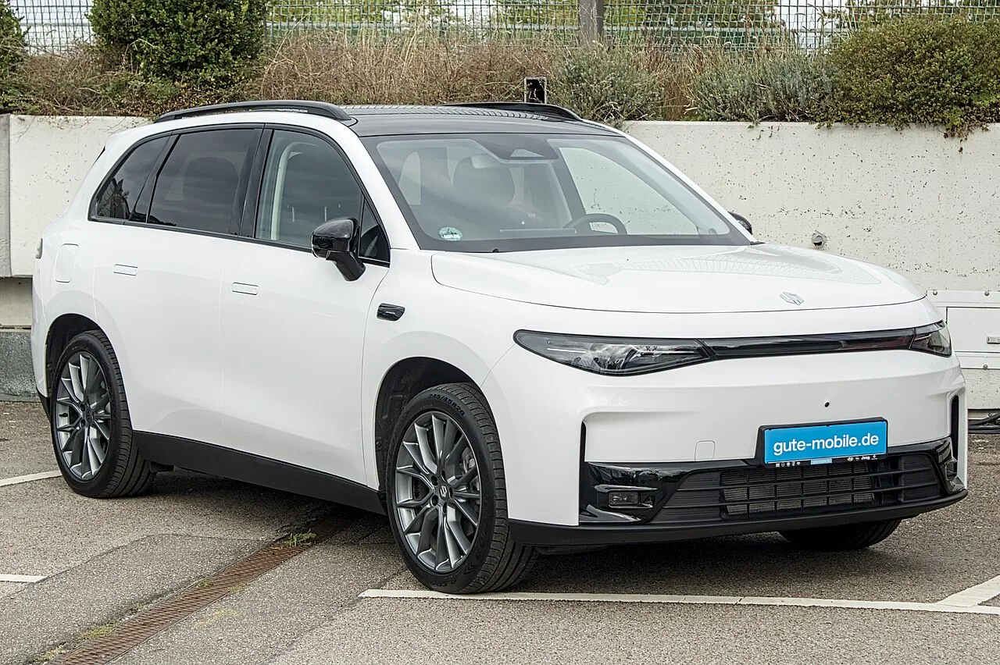
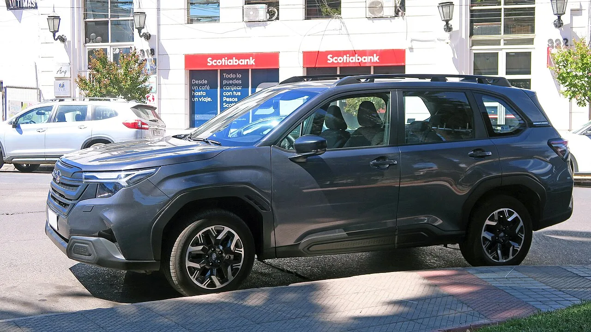
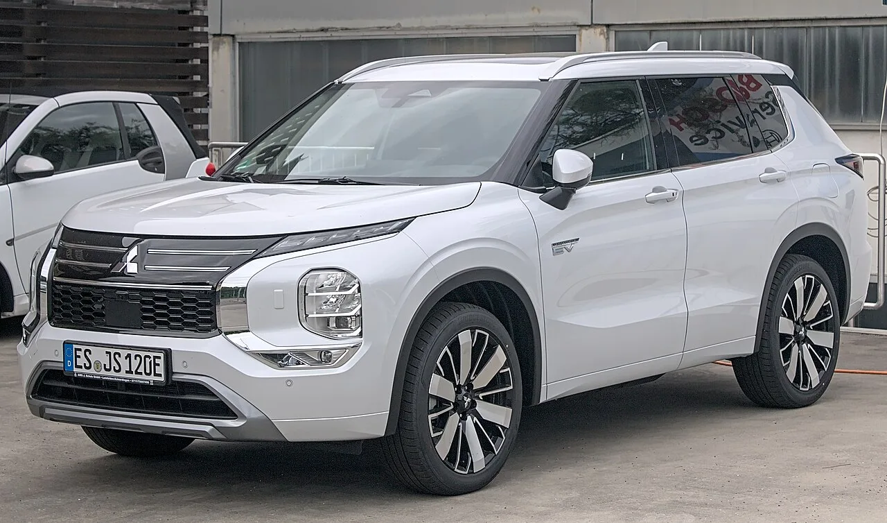

▲ 립모터 C10은 유럽 각지에서 이미 흔히 보이는 차종이 됐다. 사진은 독일 레온베르크에서 포착된 모습 ⓒ Alexander Migl, Wikimedia Commons (CC BY-SA 4.0)
중국 전기차 스타트업 립모터가 창업 10년 만에 일본의 전통 완성차 두 곳을 글로벌 판매량에서 앞질렀다. 2026년 2분기(4~6월) 전 세계 판매 대수를 집계한 결과, 립모터가 스바루와 미쓰비시자동차를 처음으로 넘어선 것으로 나타났다.
주목할 것은 이 지표가 무엇을 재는 숫자인지다. 최근 카프리즘이 다룬 립모터 관련 소식은 두 건 모두 중국 내수 시장에 관한 것이었다 — 8월 중국 완성차 인도량 순위, 7월 중국 신에너지차(NEV) 소매 침투율. 이번 수치는 다르다. 중국 시장만이 아니라 전 세계에서 팔린 대수를 기준으로, 그것도 중국 EV 업체가 아니라 일본의 레거시 완성차와 비교한 결과다.
1. 정확히 뭐가 바뀐 건가 — '중국 내수 1위'가 아니라 '글로벌 톱10' 얘기
2026년 4~6월 글로벌 판매 대수를 놓고 보면, 립모터가 스바루와 미쓰비시자동차를 처음으로 앞질렀다. 창업 10년 남짓한 중국 스타트업이 수십 년 역사의 일본 완성차 두 곳을 제쳤다는 점에서, 이 소식은 '중국 EV 업계 안에서의 순위 변동'과는 결이 다르다.
| 업체 | 2분기 글로벌 판매 | 전년 대비 |
|---|---|---|
| 립모터 | 약 24만 대 | +84% |
| 스바루 | 약 23만 대 | 감소 |
| 미쓰비시자동차 | 약 17만 대 | 감소 |
자료: Nikkei Asia, Automotive World (2026년 2분기 집계)
📍 앞서 다룬 두 기사와 무엇이 다른가
카프리즘이 다룬 8월 기사는 중국 내수 완성차 인도량 순위(BYD·상하이차·립모터 등 중국 업체 간 비교)였고, 7월 기사는 중국 승용차 소매 시장에서 신에너지차가 차지하는 비중이 주제였다. 두 기사 모두 중국 시장 안에서의 이야기다. 반면 이번 수치는 립모터가 세계 어디서 팔았든 합산한 대수를, 중국 업체가 아니라 스바루·미쓰비시라는 일본 완성차와 비교한 것이다. 같은 회사를 다루지만 완전히 다른 잣대라는 점을 구분해서 볼 필요가 있다.
립모터와 스텔란티스의 파트너십 강화 발표 원문은 아래에서 확인할 수 있다. 스텔란티스 보도자료 바로가기
2. 성장은 중국이 아니라 유럽에서 나왔다
이번 2분기 실적에서 가장 눈에 띄는 대목은 해외 비중의 변화다. 립모터의 분기 매출에서 해외 시장이 차지하는 비중은 1년 전 약 6%에서 약 20%로 뛰었다. 판매 대수가 아니라 매출 기준이지만, 방향성은 뚜렷하다 — 회사의 중심이 중국 단일 시장에서 벗어나고 있다는 뜻이다.

▲ 립모터 C10과 T03은 유럽 시장에서 가장 먼저 투입된 모델들이다 ⓒ Wikimedia Commons
이탈리아가 대표적인 사례다. 1월부터 8월까지 립모터의 판매량이 전년 대비 13배 늘었고, 이 기간 이탈리아 전기차 시장의 약 27%를 립모터 한 브랜드가 차지한 것으로 집계됐다. 유럽 전역으로 보면 립모터는 2025년 한 해에만 4만 대 이상을 실어 날랐고, 이 물량은 불가리아·크로아티아·헝가리·체코·덴마크·아이슬란드·아일랜드·슬로바키아·슬로베니아·스웨덴 등 신규 진출국이 늘어나며 뒷받침됐다.
✅ 유럽 확장의 세 축
· 판매망 — 유럽 내 판매·서비스 거점 800곳 이상 확보
· 딜러 파트너 — 스위스 공식 수입사였던 에밀 프라이 그룹이 체코·슬로바키아·슬로베니아·헝가리·크로아티아로 취급 확대
· 제품군 — 소형 T03과 준중형 C10에 이어 2026년 안에 유럽 라인업을 두 배로 늘릴 계획
3. 스텔란티스라는 지렛대 — 공장까지 내준다
립모터의 유럽 확장 뒤에는 스텔란티스가 있다. 두 회사는 2023년 합작사 '립모터 인터내셔널'(스텔란티스 51%, 립모터 49%)을 세운 뒤, 2026년 5월 파트너십을 한 단계 더 끌어올리기로 했다고 발표했다.
📍 관세를 피하는 현지 생산
스텔란티스는 스페인 자라고사 공장에서 2026년 하반기부터 립모터 B10을 생산하기로 했다. 여기에 더해 마드리드 비야베르데 공장의 소유권을 립모터 인터내셔널에 이전해, 2028년 상반기부터 신모델을 이곳에서 생산하는 방안도 추진 중이다. 두 계획 모두 EU가 도입을 예고한 '유럽산' 부품 비중 요건을 맞추고, 중국산 전기차에 매겨지는 수입 관세를 아예 피하기 위한 구조로 설계됐다.

▲ 립모터는 스텔란티스의 유통망 안에서 신차를 순차적으로 선보이고 있다. 사진은 립모터의 플래그십 전기 SUV D19 ⓒ JustAnotherCarDesigner / Wikimedia Commons
다른 중국 EV 업체와 비교하면 이 구조의 값어치가 분명해진다. BYD·지커 등은 유럽에서 직접 판매망을 새로 구축하며 수입 관세라는 벽을 그대로 마주하고 있다. 반면 립모터는 기존 완성차의 공장과 800곳 넘는 딜러망을 그대로 빌려 쓰는 방식으로 진입 장벽을 우회했다. 립모터 B10의 스페인 현지 생산이 시작되면, 관세 부담 없이 '유럽에서 만든 중국 브랜드 전기차'가 유통되는 첫 사례가 된다.
4. 스바루·미쓰비시는 왜 밀려났나
립모터의 상승만큼 중요한 것은 두 일본 브랜드가 왜 뒤처졌는가다. 핵심은 오랜 텃밭이었던 중국 시장에서의 붕괴다. 외국 브랜드 전반이 중국에서 점유율을 빠르게 잃고 있는 가운데, 스바루와 미쓰비시는 특히 전기차 부문에서 존재감을 남기지 못했다.

▲ 스바루는 동남아·오세아니아에서 강세를 보여 온 브랜드지만, 중국 전동화 경쟁에서는 밀려났다. 사진은 최근형 포레스터 ⓒ RL GNZLZ, Wikimedia Commons (CC BY-SA 4.0)
✅ 스바루의 전동화 후퇴 — 숫자로 본 배경
· 자체 개발 전기차 신모델 4종을 무기한 연기
· 전기차 전용으로 지으려던 공장을 내연기관 생산용으로 재전환
· 전동화 관련 자산에서 약 578억 엔(약 3억 6,300만 달러) 규모의 손상차손 인식
· 2분기 오세아니아(호주) 판매도 전년 대비 37% 감소(미쓰비시는 27% 감소)
토요타·닛산과 비교하면 차이가 더 뚜렷해진다. 두 회사는 중국 설계·부품을 활용한 모델을 앞세워 중국 내 순수전기차(BEV) 판매를 그나마 늘렸다. 반면 스바루와 미쓰비시는 이 보고서에서 이렇다 할 대응 모델이 언급되지 않을 정도로, 중국 내 신흥 EV 업체들의 공격적 가격 정책과 기술 경쟁에서 뒤처진 상태로 분류됐다.

▲ 미쓰비시 아웃랜더 PHEV. 미쓰비시는 동남아 시장에서는 여전히 강세지만, 중국에서의 입지는 사실상 사라졌다 ⓒ Alexander Migl, Wikimedia Commons (CC BY-SA 4.0)
즉 이번 순위 역전은 립모터 한 곳의 '반짝 실적'이 아니라, 양쪽에서 동시에 벌어진 변화의 결과다. 립모터가 유럽으로 반경을 넓히는 동안, 스바루와 미쓰비시는 가장 큰 단일 시장이었던 중국에서 발판을 잃었다.
5. 이 순위가 국내 소비자에게 의미하는 것
첫째, 립모터의 유럽 진출 방식은 국내 진출 시나리오를 가늠하는 참고 사례가 된다. 완성차 기업의 기존 유통망·생산 설비를 빌려 관세와 인증 장벽을 우회하는 전략은, 다른 중국 EV 업체들도 눈여겨보고 있는 방식이다.
둘째, 스바루·미쓰비시의 부진은 국내 수입차 시장과도 무관하지 않다. 두 브랜드 모두 국내에서 마니아층이 뚜렷한 만큼, 본사 차원의 전동화 지연이 장기적으로 국내 라인업 다양성에 영향을 줄 수 있다.
셋째, '글로벌 판매량'이라는 지표 자체를 읽는 법이 중요해졌다. 같은 회사를 두고도 중국 내수 순위, 중국 NEV 침투율, 전 세계 판매 대수는 서로 다른 그림을 보여준다. 이번처럼 '스바루·미쓰비시를 제쳤다'는 헤드라인을 접했을 때, 그것이 어느 시장·어느 잣대를 기준으로 한 얘기인지 확인하는 습관이 필요한 이유다.
6. 요약
립모터가 2026년 2분기 글로벌 판매 약 24만 대(전년 대비 +84%)를 기록하며 스바루(약 23만 대)와 미쓰비시자동차(약 17만 대)를 처음으로 앞질렀다. 이는 앞서 다룬 8월 중국 내수 순위나 7월 중국 NEV 침투율과는 전혀 다른, 전 세계 판매 대수 기준의 지표다.
립모터의 성장은 중국이 아니라 유럽에서 나왔다. 해외 매출 비중이 1년 새 6%에서 약 20%로 뛰었고, 스텔란티스와의 합작사를 통해 판매·서비스 거점 800곳 이상, 스페인 자라고사·비야베르데 공장의 현지 생산까지 확보했다.
반대편에서는 스바루와 미쓰비시가 가장 큰 시장이었던 중국에서 발판을 잃었다. 전동화 신모델을 무기한 연기하고 관련 자산에 손상차손까지 인식한 결과다. 창업 10년 남짓한 중국 스타트업이 두 전통 브랜드를 넘어선 배경에는, 이처럼 서로 반대 방향으로 움직인 두 흐름이 겹쳐 있다.